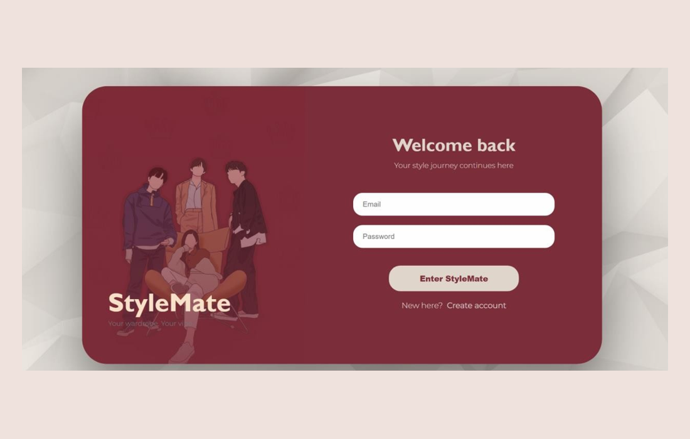

01

STYLEMATE
From “what do I wear?” to “this works.”
A wardrobe assistant designed around decision fatigue.
Recommendations, wardrobe context and virtual try-on come together to make outfit decisions feel less overwhelming.
Read the case study →